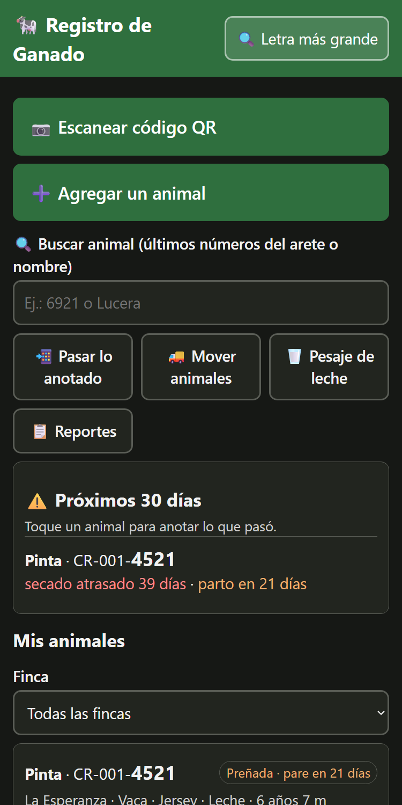
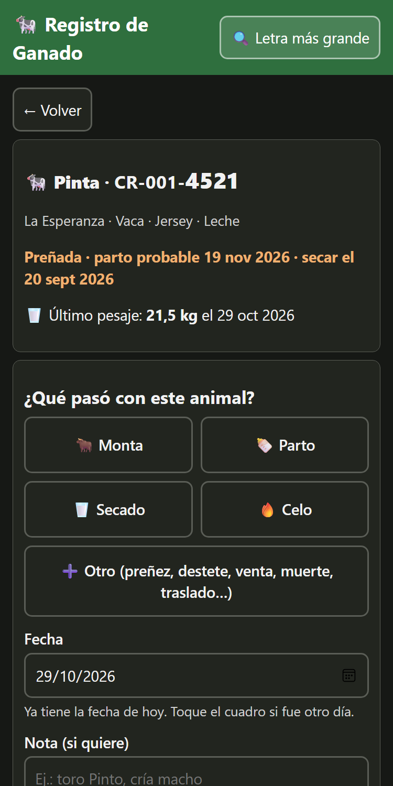
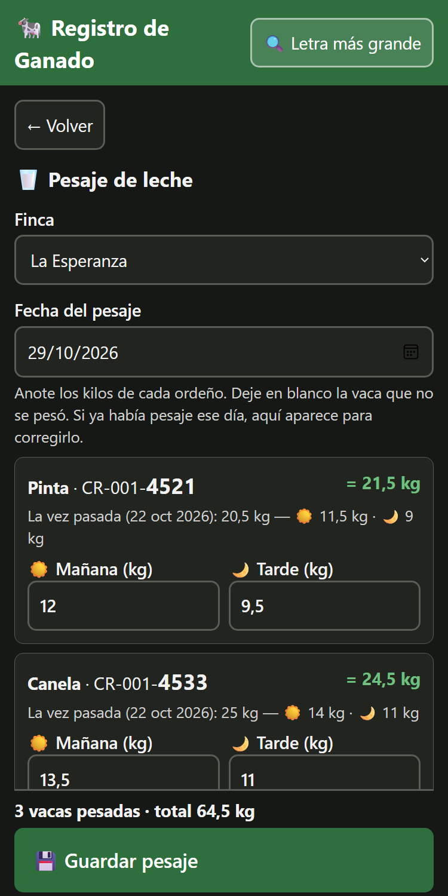
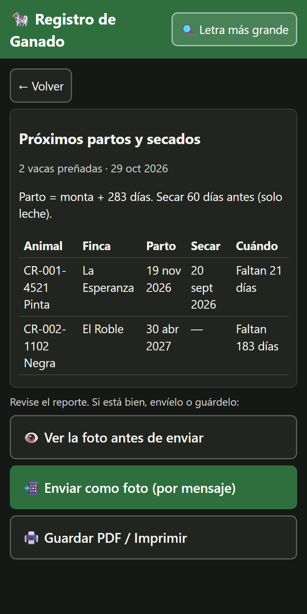
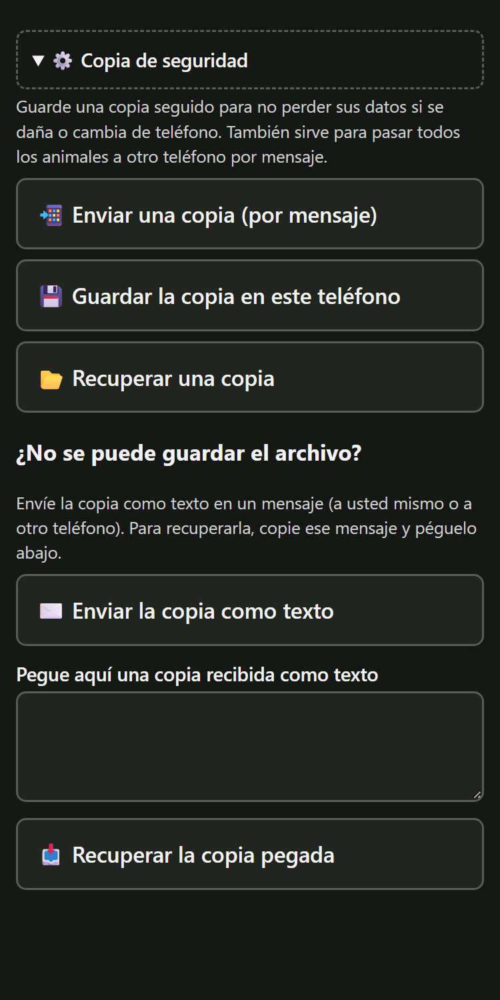

🐄 Registro de Ganado
Manual de uso · versión 1.2 · octubre de 2026
- Qué es y cómo instalarla
- La pantalla principal
- Agregar un animal
- Anotar lo que pasó
- La ficha del animal
- Avisos de parto y secado
- Pesaje de leche
- Mover animales a otra finca
- Reportes
- Copia de seguridad
- Pasar datos a otro teléfono (QR)
- Letra más grande
- Eliminar datos
- Comentarios
- Preguntas frecuentes
1. Qué es y cómo instalarla
Una app gratuita para llevar en el celular el registro de cada animal: celos, montas, preñeces, partos, destetes, secados, pesajes de leche, traslados entre fincas y salidas (venta, muerte o baja). Avisa cuándo se acerca un parto y cuándo hay que secar a una vaca de leche.
Funciona sin señal, no pide usuario ni contraseña y está pensada para usar con letra grande y botones grandes.
Importante: los datos se guardan solo dentro de cada teléfono. No viajan solos a otros teléfonos ni a internet. Para no perderlos y para compartirlos, use la copia de seguridad (sección 10) y los códigos QR (sección 11).
Instalarla en el celular
- Con señal, abra https://xdextx.github.io/control-ganado/ y espere a que cargue.
- Siga los pasos de su navegador (tabla de abajo).
- Aparece el ícono verde de la vaca. Desde ahí la app abre al instante, con o sin señal.
| Navegador | Pasos |
|---|
| Chrome (Android) — recomendado | Tres puntitos ⋮ arriba a la derecha → Agregar a pantalla principal (o Instalar app) → Instalar |
| Samsung Internet | Menú ☰ abajo → Agregar página a → Pantalla de inicio |
| Edge (Android) | Tres puntitos … abajo → Agregar al teléfono (o Agregar a pantalla de inicio) |
| Firefox (Android) | Tres puntitos ⋮ → Instalar (o Agregar a pantalla de inicio) |
| Opera / Opera GX | Menú → Agregar a… → Pantalla de inicio. En Opera la copia de seguridad no se descarga bien y el ícono puede abrir varias ventanas: mejor use Chrome. |
| Safari (iPhone) | Botón Compartir (cuadro con flecha ↑) → Agregar a inicio → Agregar. En iPhone solo funciona desde Safari. |
Si el teléfono pregunta si el navegador puede agregar íconos, toque Permitir.
Ábrala siempre desde el mismo ícono. Si la abre desde otro navegador, no verá los mismos datos: cada navegador guarda los suyos. Para cambiar de navegador, primero pase sus animales con una copia (sección 10). Cuando haya una versión nueva, el teléfono la baja solo y se ve la siguiente vez que abra la app.
2. La pantalla principal

De arriba hacia abajo:
- 📷 Escanear código QR: para recibir datos de otro teléfono o abrir un animal desde el QR del corral.
- ➕ Agregar un animal.
- 🔍 Buscar animal: escriba los últimos números del arete (por ejemplo 6921) o el nombre. Los resultados aparecen justo debajo.
- Botones: 📲 Pasar lo anotado, 🚚 Mover animales, 🥛 Pesaje de leche y 📋 Reportes.
- Aviso de copia: si lleva 7 días o más sin guardar una copia, se lo recuerda.
- ⚠️ Próximos 30 días: partos y secados que se acercan (sección 6).
- Mis animales: la lista completa, que se puede filtrar por finca. Va de 15 en 15, con los botones ← Anterior y Siguiente → al final.
- Al final: ⚙️ Copia de seguridad, 🗑️ Eliminar datos y 💬 Enviar comentarios o ideas.
Cómo leer la tarjeta de cada animal
- Nombre (si tiene) y el arete, con los últimos 4 números en grande.
- Su estado: Preñada · pare en 18 días, Seca o la salida (Venta, Muerte…).
- Finca · categoría · raza · leche o carne · edad.
- 📌 Lo último que le pasó y hace cuánto. 🥛 Su último pesaje, si es de leche.
Los animales vendidos, muertos o dados de baja no salen en la lista. Para verlos toque 👁️ Ver también animales vendidos o muertos.
3. Agregar un animal
- Toque ➕ Agregar un animal.
- Escriba el número de arete (obligatorio y no se puede repetir), el nombre si tiene, y la finca (al empezar a escribir, la app sugiere las que ya existen).
- Si quiere, abra Más datos (opcional): tipo (leche o carne), fecha de nacimiento, sexo, raza, categoría y notas.
- Toque 💾 Guardar animal. Sale el mensaje verde ✅ Animal guardado.
Después de un parto, la app ofrece ➕ Agregar la cría: abre el alta con la finca, la raza y la fecha de nacimiento ya puestas, y la nota “Cría de…”. Solo falta el arete.
4. Anotar lo que pasó
Abra el animal (tóquelo en la lista o búsquelo). Arriba aparece ¿Qué pasó con este animal?:
- Toque lo que pasó: 🐂 Monta 🍼 Parto 🥛 Secado 🔥 Celo, o ➕ Otro para ver más.
- La fecha ya tiene la de hoy. Toque el cuadro si fue otro día.
- Escriba una nota si quiere (por ejemplo, el toro o el sexo de la cría).
- Toque 💾 Guardar lo que pasó.
| Botón | Cuándo usarlo |
|---|
| 🐂 Monta | Al cargarla con toro o inseminarla. Con esta fecha se calcula el parto. |
| 🍼 Parto | Al parir. Después le ofrece agregar la cría. |
| 🥛 Secado | Al secar a la vaca de leche. |
| 🔥 Celo | Cuando la vea en celo. |
| ✔️ Preñez confirmada | Cuando el veterinario o el tacto la confirme. |
| 🐄 Destete | Al destetar a su cría. |
| ❌ Aborto / vacía | Si pierde la cría o resulta vacía. Quita los avisos de parto. |
| 💰 Vendido · ✝️ Murió · 📤 Dado de baja | Cuando sale del hato. El botón de guardar se pone rojo y dice “ya no saldrá en la lista”. |
| 🚚 Pasó a otra finca | Pide la finca de destino. El animal cambia de finca y queda el traslado en su historial. |
¿Se equivocó? En el historial, toque Borrar junto al evento. El botón cambia a “¿Seguro? Toque otra vez”; tóquelo de nuevo para borrarlo.
5. La ficha del animal

- Arriba: quién es, su finca y datos, si está preñada (con parto y secado probables) y su último pesaje.
- ¿Qué pasó con este animal? (sección 4).
- 🥛 Pesajes de leche: los últimos 5, con flecha verde ▲ si subió o roja ▼ si bajó.
- Historial: todo lo anotado, del más nuevo al más viejo.
- ✏️ Cambiar datos del animal: arete, nombre, finca y más datos. Está cerrado para no cambiarlos sin querer. Si cambia el número de arete, cámbielo también en los otros teléfonos; si no, al pasar los datos el animal quedará repetido.
- 📲 Compartir o imprimir: reporte del animal, QR para pasarlo a otro teléfono y QR para el corral.
- 🗑️ Eliminar este animal (sección 13).
6. Avisos de parto y secado
- Parto probable = fecha de la última monta + 283 días.
- Secado (solo vacas de leche) = 60 días antes del parto probable.
- En la pantalla principal aparecen los que faltan 30 días o menos, un renglón por animal: “parto en 12 días”, “secado atrasado 5 días”. Toque el animal para anotar lo que pasó.
- El aviso de secado se quita al anotar el Secado; los dos se quitan al anotar el Parto o Aborto / vacía.
Si solo anotó la preñez confirmada, sin la monta, el parto se calcula desde la confirmación y saldrá más tarde de lo real. Anote siempre la monta.
7. Pesaje de leche

- Toque 🥛 Pesaje de leche en la pantalla principal.
- Elija la finca y la fecha (siempre viene la de hoy, aunque la app haya quedado abierta desde ayer).
- Aparece cada vaca de leche con dos cuadros: ☀️ Mañana (kg) y 🌙 Tarde (kg). Debajo dice cuánto dio la vez pasada.
- Escriba los kilos (puede usar coma o punto: 12,5). La tecla Siguiente del teclado pasa al próximo cuadro. Deje en blanco la vaca que no se pesó.
- Abajo, siempre a la vista, está el total y 💾 Guardar pesaje.
- Un número imposible (letras o más de 60 kg) se pone rojo y no deja guardar hasta corregirlo.
- Un número muy distinto a la vez pasada (más del doble o menos de la mitad, por ejemplo 51 en vez de 15) se pone amarillo para que lo revise. Si está bien, se puede guardar igual.
- Si abre un día que ya tiene pesaje, los números aparecen para corregirlos. Las vacas secas salen marcadas.
8. Mover animales a otra finca
- Toque 🚚 Mover animales.
- Elija de qué finca salen. Puede filtrar por categoría (por ejemplo, solo novillas).
- Marque los animales (o ☑️ Marcar todos).
- Escriba o elija a qué finca van y la fecha.
- Toque el botón, que dice por ejemplo 🚚 Mover 8 animales a El Roble.
Para mover un solo animal, también puede usar Otro → 🚚 Pasó a otra finca en su ficha.
9. Reportes

Toque 📋 Reportes y elija:
- 🐄 Animales por finca · 🍼 Próximos partos y secados · 📤 Salidas del mes · 🚚 Traslados del mes · 🥛 Pesajes de leche (total por finca, promedio y cambio de cada vaca).
- El reporte de un solo animal está en su ficha: 📲 Compartir o imprimir → 📋 Reporte de este animal.
Primero se ve el reporte. Al final:
- 👁️ Ver la foto antes de enviar: muestra la imagen exacta que se enviará.
- 📲 Enviar como foto: abre el menú de compartir del teléfono para mandarla por su app de mensajes.
- 🖨️ Guardar PDF / Imprimir: elija “Guardar como PDF” o una impresora. Use esta opción para reportes muy largos: la foto se corta y lo avisa.
10. Copia de seguridad

Al final de la pantalla principal, en ⚙️ Copia de seguridad:
- 📲 Enviar una copia (por mensaje): abre el menú de compartir con un archivo que tiene todos sus datos. Mándeselo a usted mismo o a otro teléfono. En la computadora el botón dice 💾 Guardar una copia.
- 💾 Guardar la copia en este teléfono: guarda el archivo en Descargas.
- 📂 Recuperar una copia: elija el archivo.
¿No se puede guardar el archivo?
Algunos navegadores (como Opera) o las páginas abiertas desde un mensaje no dejan guardar archivos. Entonces use texto:
- ✉️ Enviar la copia como texto: la manda como un mensaje de texto. Si el teléfono no deja compartir, la copia para pegarla, o la muestra marcada para que la copie con el dedo.
- Para recuperarla: copie ese mensaje, péguelo en Pegue aquí una copia recibida como texto y toque 📥 Recuperar la copia pegada.
Recuperar una copia, por archivo o por texto, se suma a lo que ya tiene: agrega los animales y eventos que falten y no borra nada. Si un animal no tenía nombre, raza u otro dato y la copia sí lo trae, se completa; lo que ya estaba escrito no se cambia. Si la copia trae datos dañados, los ignora y le dice cuántos.
Guarde una copia seguido. Si borra los datos del navegador, desinstala la app o cambia de teléfono, solo se recupera lo que esté en una copia. La app le recuerda si lleva 7 días sin hacerla.
11. Pasar datos a otro teléfono (QR)
| Quiero… | Cómo |
|---|
| Pasar todo | Copia de seguridad (sección 10): enviar en un teléfono y recuperar en el otro. |
| Pasar lo anotado hoy (o desde ayer, o de la semana) | 📲 Pasar lo anotado: elija el periodo y en el otro teléfono toque 📷 Escanear código QR apuntando a la pantalla. |
| Pasar un animal con su historial | En su ficha: 📲 Compartir o imprimir → Pasar este animal a otro teléfono (QR). |
| Abrir un animal desde el corral | En su ficha: Código QR para el arete o corral → imprimir y pegar. Al escanearlo se abre su ficha. Si el arete no está registrado, se abre el alta con el número puesto. |
Todo lo que llega por QR se suma sin borrar nada. La primera vez, el teléfono pide permiso para usar la cámara: toque Permitir. Si lo negó, la app explica cómo darlo. La cámara se apaga sola si cambia de app.
12. Letra más grande
Arriba a la derecha, 🔍 Letra más grande agranda toda la app en ese teléfono. Tóquelo otra vez (Letra normal) para volver.
13. Eliminar datos
Cuidado: borrar es para siempre y no se puede deshacer. Si un animal se vendió o murió, no lo elimine: use “Otro → Vendido / Murió” para que quede el registro.
- Un animal: en su ficha, 🗑️ Eliminar este animal.
- Todo lo del teléfono: al final de la pantalla principal, 🗑️ Eliminar datos → Borrar TODOS los datos. Antes, guarde una copia.
En los dos casos hay que escribir la palabra BORRAR y tocar 🗑️ Sí, borrar para siempre. Si se arrepiente, toque ✋ No, cancelar.
14. Comentarios
Al final de la pantalla principal, 💬 Enviar comentarios o ideas: escriba qué no se entiende, qué falla o qué le gustaría, y toque ✉️ Enviar por correo. Solo se envía lo que usted escribe, nunca datos del ganado.
15. Preguntas frecuentes
¿Se pierden los datos si cierro la app o apago el teléfono? No, quedan guardados.
¿Cuándo sí se pierden? Si borra los datos del navegador, desinstala el navegador o cambia de teléfono. Por eso, copia de seguridad seguido.
Al tocar “atrás” en el teléfono, ¿se cierra la app? No: vuelve a la pantalla anterior, igual que el botón ← Volver. Solo en la pantalla principal cierra la app.
Cambié el nombre de una vaca y en el otro teléfono no cambió. Al pasar una copia, se completan los datos que en el otro teléfono estaban vacíos, pero no se cambian los que ya tenían algo escrito. Corríjalo también en el otro teléfono.
No se descarga la copia de seguridad. Use ✉️ Enviar la copia como texto (sección 10), o use la app en Chrome.
¿Funciona sin señal? Sí, después de abrirla una vez con señal. También abre al instante con señal mala.
Mi familiar no ve los animales que yo anoté. Es normal: cada teléfono tiene sus datos. Páseselos con “Pasar lo anotado” o con una copia.
Dice “Ya existe un animal con el arete…”. Ese arete ya está. Búsquelo por sus últimos números (puede estar entre los vendidos).
El botón de guardar se puso rojo. Eligió una salida (venta, muerte o baja): al guardar, el animal deja de salir en la lista.
Un número del pesaje está amarillo. Es muy distinto a la vez pasada. Revíselo; si está bien, guarde igual.